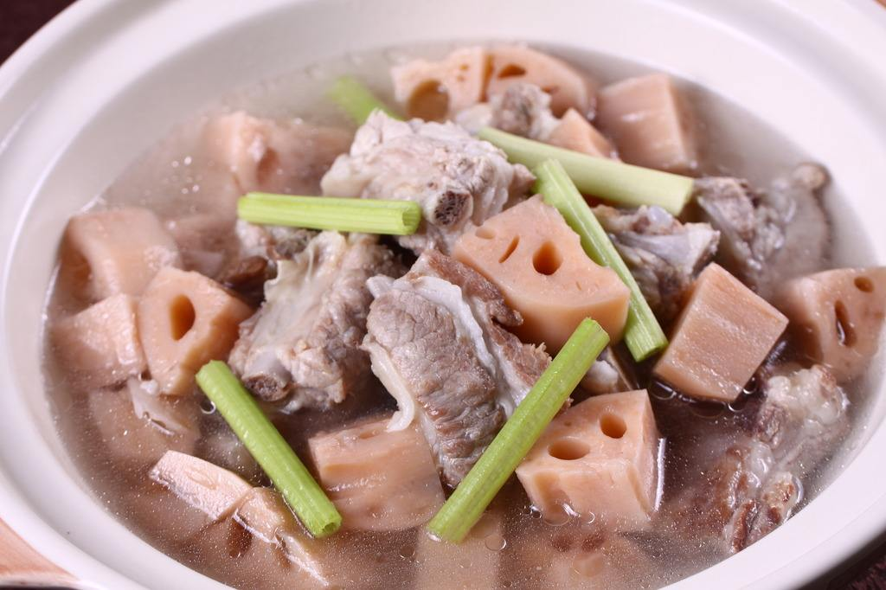

金牌月嫂告诉你产后第二周补肾固腰汤水的做法
2017-01-09 16:38:04gz1111
来源:乐孕妈妈
往往产后“补”都是要有个度。因为每个人的体制不同，对营养的需求也是完全不相同。适当地补充人体所缺的营养品或是中药有利于身体的平衡健康。接下来
乐孕妈妈金牌月嫂告诉你产后第二周补肾固腰做法。
第一：蒸排骨山药：

首先食材准备：山药若干块、小排骨7~8块(用黄酒腌制)、石斛3颗、枸杞7~8个、葱段、姜片。
做法：除山药外的其它原料，上锅蒸15分钟，再放入山药，继续蒸20分钟即可。
第二：杜仲腰花汤
食材：杜仲30克、猪腰30克、老姜10克
做法：将杜仲洗净，加500毫升的水和姜，以小火煮至汤汁约300毫升为止。将猪腰切片、洗净，用沸水氽烫过，用煮杜仲的水去渣后和猪腰一起煮开即可。
功效：补肝肾、强筋骨，对于腰酸乏力、头晕和耳鸣都有改善功效。
第三：芝麻山药粥
食材：熟黑芝麻30克、新鲜山药30克、米50克、冰糖适量。
做法：山药切丁，米清洗干净，将山药、熟黑芝麻和米一起加水煮40分钟，等米粒完全煮烂之后，再加少许冰糖调味。
功效：本品具有益气补脾，固肾益精，润肺化痰的功效。
第四：山药
食材：山药1根、枸杞1小把、柱草3克、石斛2克、蓿叶5克
做法：山药去皮切块(因为麻手，戴手套操作)，将其它用温水泡1个小时。水烧开将山药块放入20分钟，再放入泡好的其它中药熬30分钟。
食用方法：1天2次，上午1碗，下午1碗，晚上9点后不喝
第五：红枣
做法：10粒切开，枸杞10粒煮水喝。
功效：补气补肾，养眼祛斑，还可治腰膝酸软。
以上就是主要补肾固腰的一些食品，还有栗子鸡块、红枣小米粥、黑米鸡肉粥、清蒸鲈鱼等。
------